<!DOCTYPE HTML>
<!--
	Paradigm Shift by HTML5 UP
	html5up.net | @ajlkn
	Free for personal and commercial use under the CCA 3.0 license (html5up.net/license)
-->
<html>
	<head>
		<title>OPENSTREETMAP DATA AND SENTINEL-2 IMAGERY FOR CLASSIFYING AND MONITORING INFORMAL SETTLEMENTS</title>
		<meta charset="utf-8" />
		<meta name="viewport" content="width=device-width, initial-scale=1, user-scalable=no" />
		<meta name="description" content="" />
		<meta name="keywords" content="" />
		<link rel="stylesheet" href="assets/css/main.css" />
	</head>
	<body class="is-preload">

		<!-- Wrapper -->
			<div id="wrapper">

				<!-- Intro -->
					<section class="intro">
						<header>
							<h1>OSM AND SENTINEL-2 FOR CLASSIFYING AND MONITORING INFORMAL SETTLEMENTS</h1>
							<ul class="actions">
								<li><a href="#first" class="arrow scrolly"><span class="label">Next</span></a></li>
							</ul>
						</header>
						<div class="content">
							<span class="image fill" data-position="center">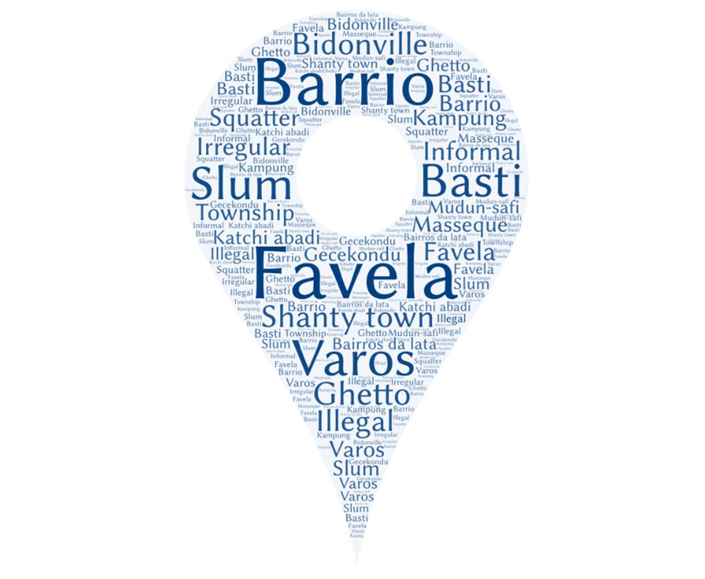</span>
						</div>
					</section>

				<!-- Section -->
					<section id="first">
						<header>
							<h2>Context</h2>
						</header>
						<div class="content">
							<p>The identification and monitoring of <strong>Informal Settlements</strong> in urban areas is an important 
								step in developing and implementing pro-poor urban policies. Understanding when, 
								where and who lives inside informal settlements is critical to efforts to improve their 
								resilience. This study aims at integrating OSM data and sentinel-2 imagery for 
								classifying and monitoring the growth of informal settlements methods to map informal 
								areas in Kampala (Uganda) and Dar es Salaam (Tanzania) and to monitor their growth 
								in Kampala. Three building feature characteristics of size, shape and Distance to nearest 
								Neighbour were derived and used to cluster and classify informal areas using Hotspot 
								Cluster analysis and ML approach on OSM buildings data. The resultant informal 
								regions in Kampala were used with Sentinel-2 image tiles to investigate the spatiotemporal changes in informal areas using Convolutional Neural Networks (CNNs). 
								Results from Optimized Hot Spot Analysis and Random Forest Classification show that 
								Informal regions can be mapped based on building outline characteristics. An accuracy 
								of 90.3% was achieved when an optimally trained CNN was executed on a test set of 
								2019 satellite image tiles. Predictions of informality from new datasets for the years 
								2016 and 2017 provided promising results on combining different open source 
								geospatial datasets to identify, classify and monitor informal settlements.</p>
							<span class="image main">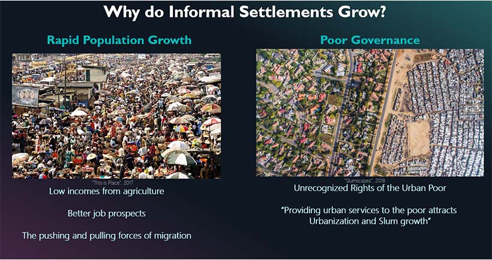</span>
							<span class="image main">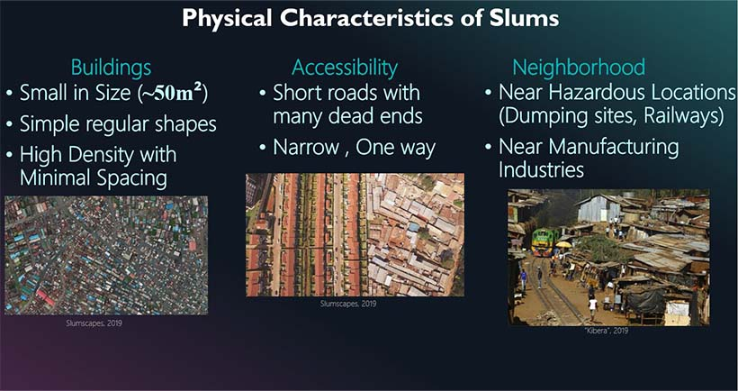</span>
						</div>
					</section>

				<!-- Section -->
					<section>
						<header>
							<h2>Research Aim</h2>
						</header>
						<div class="content">
							<p><strong>This Research Project</strong> sought to Integrate OSM data and sentinel-2 imagery for classifying and monitoring the 
								growth of informal settlements, by answering the research Questions:</p>
							<ul class="feature-icons">
								<li class="icon solid fa-map-marker-alt">How can buildings outline characteristics be used to differentiate Informal settlements from Formal Settlements? 
								</li>
								<li class="icon solid fa-map-marker-alt">Is it possible to predict informal areas in a city by understanding housing informality in other cities of similar context using buildings outline characteristics and machine learning?
								</li>
								<li class="icon solid fa-map-marker-alt">What is the most appropriate Machine Learning technique based on accuracy to predict informal areas in a city based on buildings outline characteristics?
								</li>
								<li class="icon solid fa-map-marker-alt">How can we exploit the potential of freely available Sentinel-2 satellite imagery with advanced machine learning to estimate the growth of Informal settlements in an Area? 
								</li>
							</ul>
						</div>
					</section>

				<!-- Section -->
					<section>
						<header>
							<h2>DATA AND METHODOLOGY</h2>
						</header>
						<div class="content">

							<!-- Section -->
								<section>
									<header>
										<h3>DATA AND STUDY AREA</h3>
										<p>The project was carried out over the cities of Kampala in Uganda and Dar Es Salaam in Tanyania, Using Openstreet map buiding polygons and Sentinel 2 Satellite Imagery.</p>
									</header>
									<div class="content">
										<span class="image main">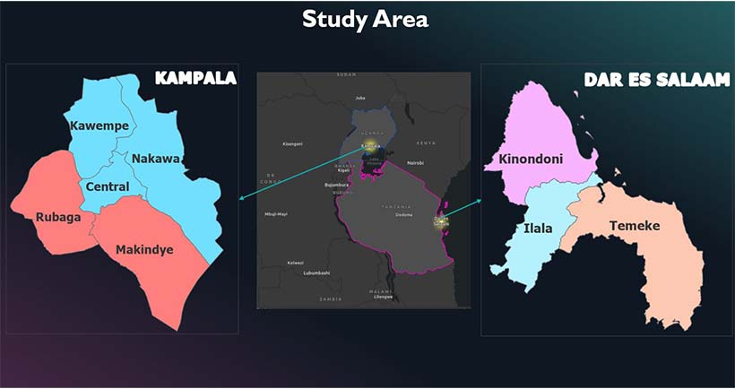</span>
							    		<span class="image main">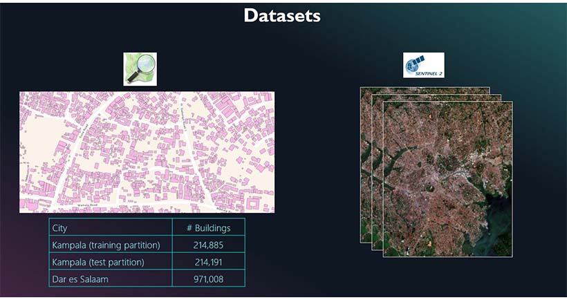</span>
									</div>
								</section>

							<!-- Section -->
								<section>
									<header>
										<h3>Methodology</h3>
										<p>Preprocessing of OSM data and Satellite Imagery. This involved data cleaning and 
											preparation suitable for Analysis.</p>
										<p>OSM Building polygons enrichment with Feature geometric and topologic 
											characteristics.</p>
										<p>Hotspot clustering analysis on building features training dataset to cluster Informal 
											settlement buildings from the formal ones.</p>
										<p>Test and select the best classifier based on accuracy to predict informal areas in a city 
											based on similarity context of buildings outline characteristics. </p>
										<p>Sentinel-2 image classification. This stage involves slicing the images into tiles and 
											using the predicted Informal settlement regions from the step above to generate training 
											set on image tiles of corresponding date period. Thereafter, a Convolutional Neural 
											Networks Model is trained to identify Image tiles that belong to Informal settlements. 
											The trained model is then used to predict Informal settlement image tiles for other 
											temporal datasets.</p>
									</header>
									<div class="content">
										<span class="image main">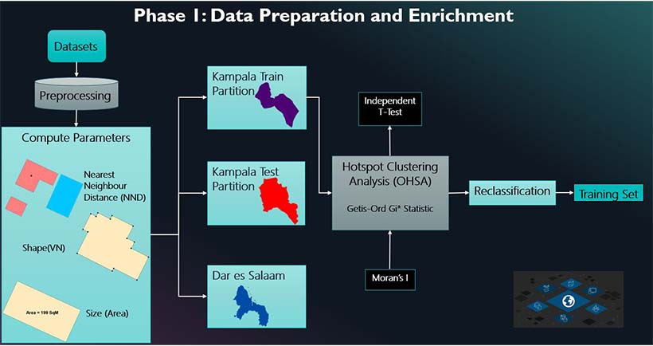</span>
							    		<span class="image main">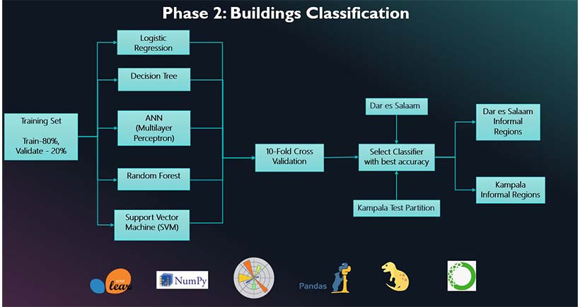</span>
										<span class="image main">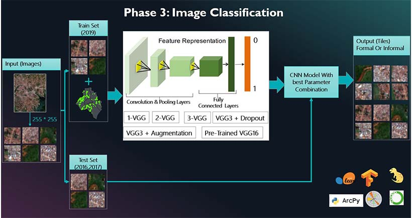</span>
									</div>
								</section>
						</div>
					</section>


				<!-- Section -->
				<section>
					<header>
						<h2>RESULTS</h2>
					</header>
					<div class="content">

						<!-- Section -->
							<section>
								<header>
									<h3>Data Preparation and Enrichment</h3>
									<p>Cold spots represent areas that have low values of Area, Shape and Nearest Neighbor Distance (NND). 
										Informal settlements are characterised by buildings that have simple shape, small is size and 
										are densely located in a particular location i.e. short NNDs between polygons. 
										With this, the cold spots resulting from the Hot Spot Analysis (HSA) are considered to be locations with 
										informality based one the building typologies used to characterise them. 
										To simplify the data for further analysis, all the HSA results were classified to bin the data 
										points into two classes i.e. “Informal” and “Formal”.
										</p>
								</header>
								<div class="content">
									<span class="image main">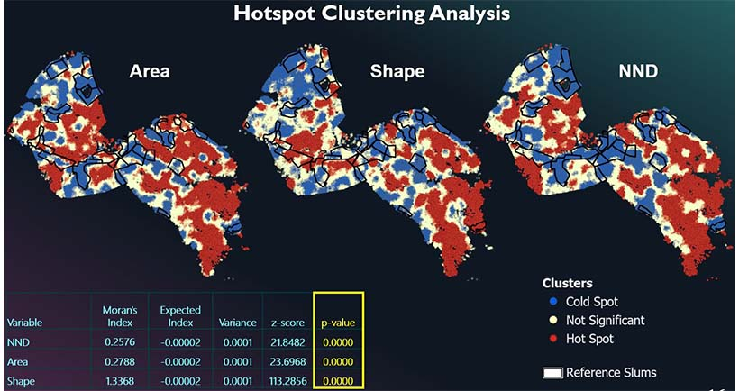</span>
									<span class="image main">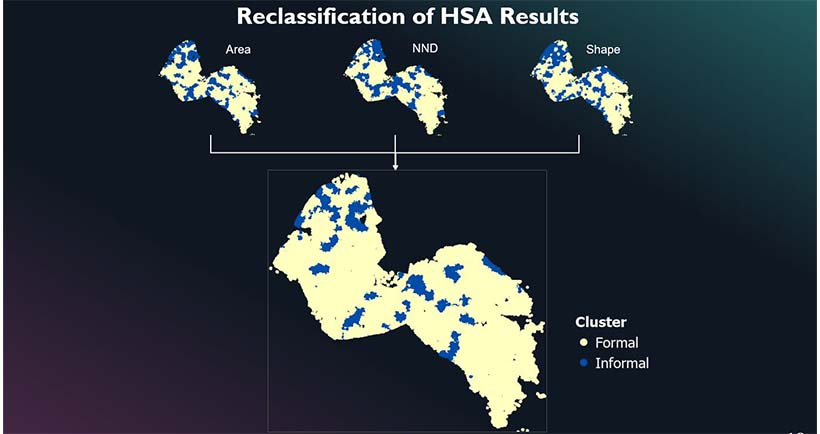</span>
								</div>
							</section>

						<!-- Section -->
							<section>
								<header>
									<h3>Buildings Classification</h3>
									<p>Based on the accuracy assessment results, the Random Forest Classifier performed better 
										than the other classifiers and hence was used to classify the data in the Kampala testing partition 
										and the city of Dar es Salaam. The informality regions in Kampala are in all four Divisions except the central 
										region. The central region is mainly characterized by already planned areas with planned 
										streets, and mostly elevated buildings from the colonial times. It is also the Central Business 
										District (CBD) where Business and Administration of the city is carried out. For Dar es Salaam Informality is mostly shown in 
										the center of the city across all municipalities. The largest Slum Tandale (located in the south 
										of Kinondoni) was highlighted by the Classifier Model which shows that it is a good enough 
										model.</p>
								</header>
								<div class="content">
									<span class="image main">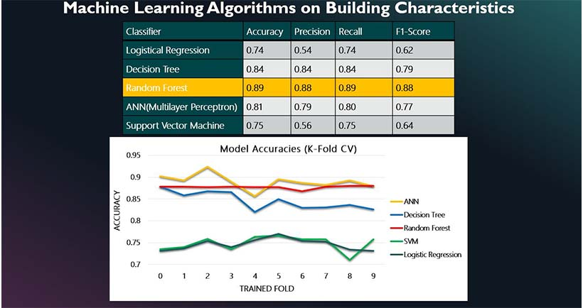</span>
									<span class="image main">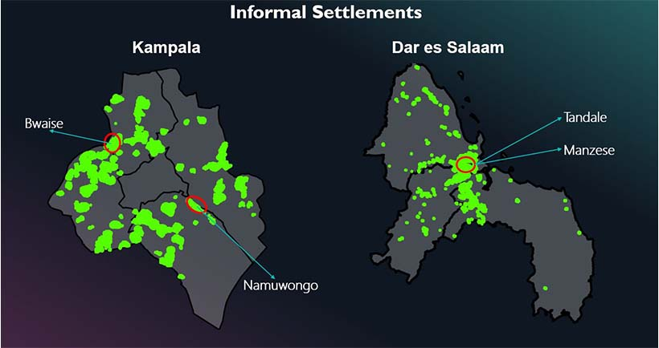</span>
								</div>
							</section>

						<!-- Section -->
							<section>
								<header>
									<h3>Deep Learning Image Classification</h3>
									<p>The image tiles representing informal settlements were mostly composed of compact 
										buildings and tiles appear compact with a mixture of brown and light pixels. Tiles 
										comprising of relative dense areas of built-up > 50 percent and vegetation < 30 percent were 
										identified as those overlapping with the Informal regions hence classifying them as 
										Informal areas. False positives existed in the study area that also comprising of areas of 
										dense buildings and bare-soil areas due to similarity in pixel intensity. The image tiles used 
										to train the CNN models show a significant difference between formal 
										and informal regions. By visual inspection, the quantity of polygons increased through the four-year period. 
										Informal settlements grew outwards to the neighbouring image tiles over the years. The North-eastern and central parts of the study area have the least concentration and change in informal 
										settlement regions. Since the central region is the CBD of the city, it also experiences limited 
										development of Informal settlements over the period of time
										</p>
								</header>
								<div class="content">
									<span class="image main">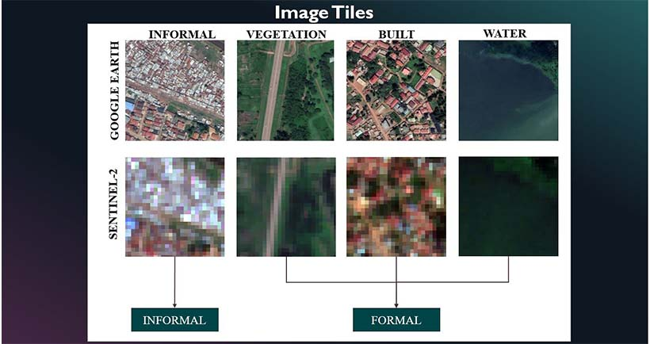</span>
									<span class="image main">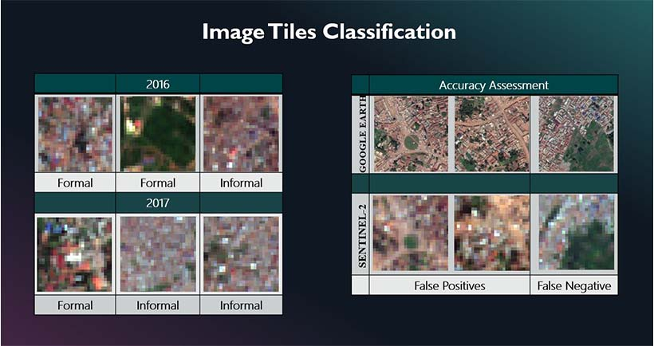</span>
									<span class="image main">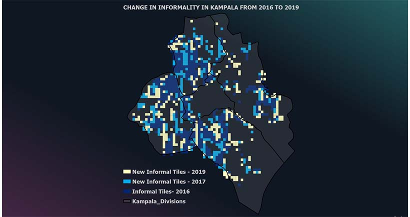</span>
								</div>
							</section>

					</div>
				</section>


				<!-- Section -->
					<section>
						<header>
							<h2>MORE INFORMATION</h2>
							
						</header>
						<div class="content">
							<p><strong>Full documentation</strong> for this research and GitHub repo can be viewed:</p>
							<ul class="actions">
								<li><a href="https://run.unl.pt/handle/10362/93641" class="button primary large">DOCUMENTATION</a></li>
								<li><a href="https://github.com/BrendaAyo/MastersThesis" class="button large">GITHUB REPOSITORY</a></li>
							</ul>
						</div>
					</section>


				<!-- Section -->
					<section>
						<header>
							<h2>References</h2>
						</header>
						<div class="content">
							<p><a href="http://www.africaranking.com/20-worst-slums-in-africa/" target="_blank">The 20 Worst Slums in Africa</a></a></p>
							<p><a href="https://thisisplace.org/" target="_blank">PLACE</a></a></p>
						</div>
					</section>

				<!-- Copyright -->
					<div class="copyright">&copy; Brenda Ayo. 2022. All rights reserved. Design: <a href="https://html5up.net">HTML5 UP</a>.</div>

			</div>

		<!-- Scripts -->
			<script src="assets/js/jquery.min.js"></script>
			<script src="assets/js/jquery.scrolly.min.js"></script>
			<script src="assets/js/browser.min.js"></script>
			<script src="assets/js/breakpoints.min.js"></script>
			<script src="assets/js/util.js"></script>
			<script src="assets/js/main.js"></script>

	</body>
</html>